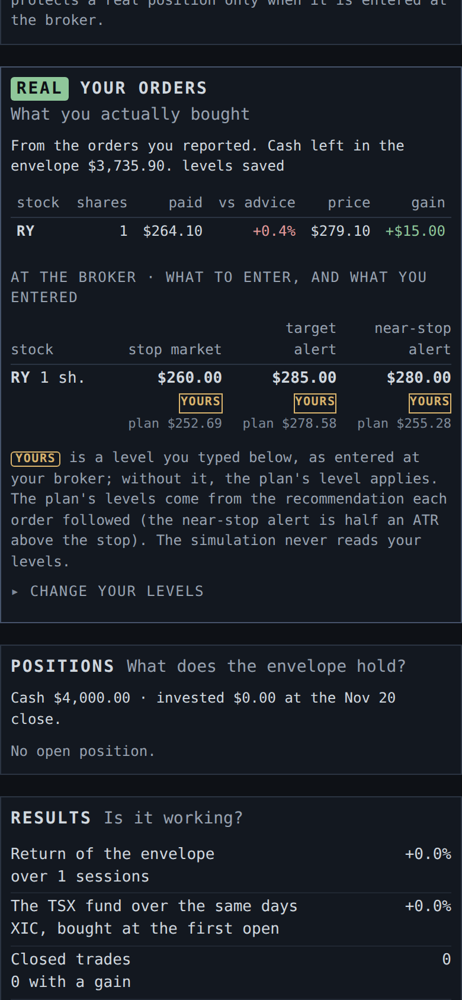
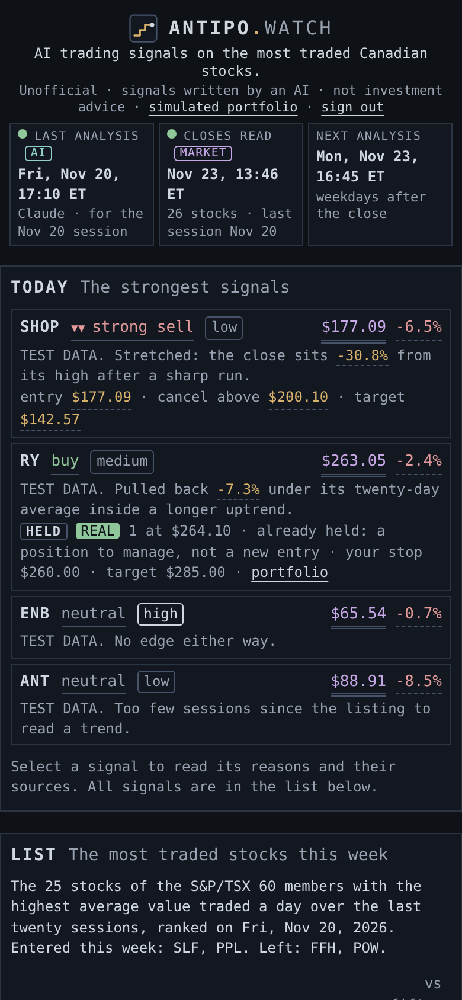
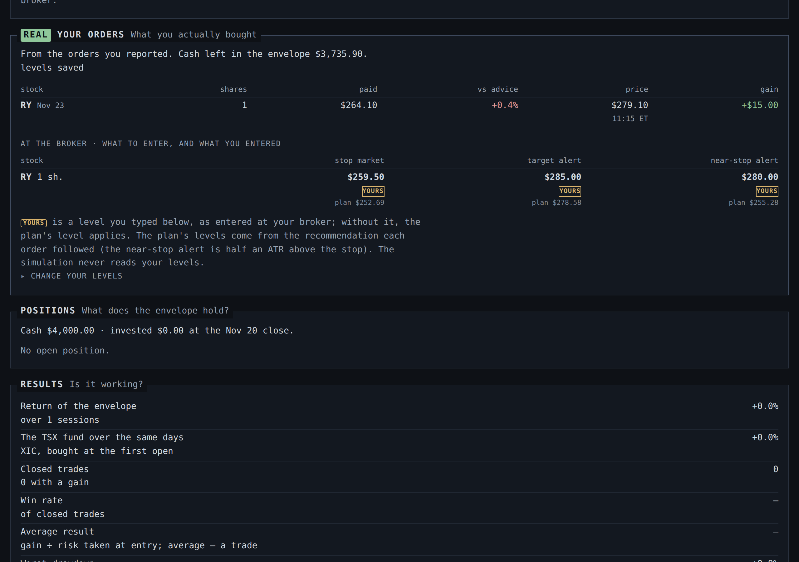

Loop 016 — Your levels at the broker
2026-11-23 · The owner records the stop and the alerts actually entered at the broker, and the scanner knows which stocks are already held. Versions 0.19.0 and 0.19.1.
Why
The price wasn't exact, so I should be able to adjust it in the interface to give me the right table of stop market orders and alerts. … How do we handle the signals that exist and the ones we already placed? We should show the position, no? Right now we see buy signals even when the positions are taken.
The owner's words, reworded in English, on the day of the first real orders.
What changed



Invented prices and an invented position on a made-up day, from a local server.
- At the broker: for each real position, the stop market price, the target alert and an optional near-stop alert. The owner's level is marked YOURS, the plan's stays beside it; without one, the plan's applies.
- One form, one save: a comma or a dot is fine. A typo is refused with its reason (not a price, too far from the last price, stop above the target) and nothing is stored.
- The session panel uses them: a real position is near its stop at or below the owner's alert.
- HELD on the scanner: a buy on a stock already held reads as a position to manage, with the levels in force. The orders say when the simulation buys a stock already held for real.
- 0.19.1: the REAL table showed Friday's close as "last" on Monday. It now shows the session price with its time, or names the close.
- Kept apart: the levels live in their own file next to the ledger; an upload of fills keeps them. The simulation never reads them.
A pitfall
A build during the session froze the 256 MB machine; the site was down about fifteen minutes until the machine was stopped and started. Before the next build only 15 MB were available, the service having grown during the day. The release went out with the service paused for the build, a few minutes. Building the release outside market hours, or a larger machine, is the way out.
Checks
| Check | Result | Evidence |
|---|---|---|
| Unit and browser tests | passed | 266 and 23; refusals, fallback to the plan, the owner's near-stop alert, held stocks, an upload keeping the levels. |
| Real use in a browser | passed | A typo refused, then levels saved with a comma on a phone, seen as YOURS; no horizontal scrolling at 390 px. |
| CI and CodeQL | passed | Green on both release commits. |
| Live after deploy | passed | Version 0.19.1, 50 stocks, session prices for DOL and FTS; /levels refuses without the login. |
| The owner's real levels saved on the live site | not run | The owner's to do, from a phone. |